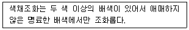
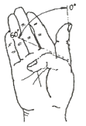
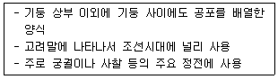
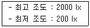
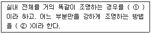

실내건축기사(구) (2010-03-07 기출문제)
1과목: 실내디자인론
1. 황금비례에 대한 설명 중 옳지 않은 것은?
- 고대 로마인들이 창안했다.
- 건축물과 조각 등에 이용되어온 기하학적 분할방식이다.
- 1 : 1.618의 비율이다.
- 몬드리안의 작품에서 예를 들 수 있다.
(정답률: 68%)

2. 실내 기본요소 중 문에 대한 설명으로 옳지 않은 것은/
- 문의 치수는 기본적으로 사람의 출입을 기준으로 결정된다.
- 실내에서의 문의 위치는 내부공간에서의 동선을 결정한다.
- 여닫이문은 문틀의 홈으로 2~4개의 문이 미끄러져 닫히는 문으로 일반적으로 슬라이등 도어라고 한다.
- 사람이 출입하는 문의 폭은 일반적으로 900mm 정도이다.
(정답률: 81%)
3. 형태 심리학의 지각 원리에 대한 설명 중 옳지 않은 것은?
- 근접성은 가까이 있는 시각적 요소드를 패턴이나 그룹으로 인지하게 되는 특성을 말한다.
- 유사성은 형태, 규모, 색 등의 시각적 요소가 유사할 때 서로 연관되어 보이는 현상이다.
- 폐쇄성이란 완전한 시각 요소들을 불완전한 것으로 지각하는 성향을 말한다.
- 도형과 배경의 법칙은 도형과 배경이 번갈아 보이면서 다른 형태로 지각되는 심리이다.
(정답률: 85%)
4. 오피스 랜드스케이프에 관한 설명으로 옳은 것은?
- 복도를 사이에 두고 양쪽에 작은 방들을 배치한 사무소 평면계획이다.
- 사무실에 업무능률 상승을 위해 조경을 도입한 방식을 말한다.
- 배치는 의사전달과 작업흐름과 같은 실제적 패턴을 고려한다.
- 세포형 오피스라고도 하며 개인별 공간을 확보하여 스스로 작업공간의 연출과 구성이 가능하다.
(정답률: 68%)
5. 실내공간에서 질감이 미치는 영향으로 옳지 않은 것은?
- 재료가 지닌 질감은 실제의 생활에 편리함과 불편함을 준다.
- 매끄러운 질감은 빛을 반사하며 시선을 분산시킨다.
- 질감이 거칠면 거칠수록 빛을 흡수하여 무겁고 안정된 시각적 느낌을 준다.
- 반짝이는 질감의 재료는 청소하기는 쉽지만 더러움이 너무 쉽게 눈에 띄어 불편하다.
(정답률: 37%)
6. 실내디자인 과정에서 설계를 기본계획과 실시설계로 구분할 경우, 다음 중 기본계획의 내용에 속하는 것은?
- 가구를 디자인하거나 기성품 중에서 선택, 결정한다.
- 전기 배선도, 적정 조도 계산서를 작성한다.
- 투시도, 특기 시방서를 작성한다.
- 계획안 전체의 기본이 되는 형태, 기능 등을 다이어그램으로 표현한다.
(정답률: 84%)
7. 공간에 위치한 두 개의 점과 관련한 설명 중 옳지 않은 것은?
- 점에 대한 집중력이 증가한다.
- 장력의 작용으로 선의 효과가 생긴다.
- 시선의 이동을 유도할 수 있다.
- 두 점간의 거리가 여러 가지 효과의 변수가 된다.
(정답률: 62%)
8. 실내 디자인의 영역에 대한 설명으로 옳은 것은?
- 실내디자인의 영역은 건축물의 실내 공간을 주 대상으로 하며, 도시환경이나 가로공간에서도 발견된다.
- 실내디자인은 건축 공간의 심리적 문제 해결이나 독자적인 표현을 대상으로 하며 건축물의 매스나 형태디자인을 주 영역으로 한다.
- 건축 구조물에 의해 형성된 내부 공간만을 대상으로 한다.
- 건축물의 구조 및 재료에 대한 지식을 가지고 구조적인 해석을 할 수 있어야 한다.
(정답률: 84%)
9. 상품과 고객사이에서 치밀하게 계획된 정보 전달수단으로 장식된 시각과 통신을 꾀하고자 하는 디스플레이 기법은?
- 키 플랜(key plan)
- VMD(visual merchandising)
- 리노베이션(renovation)
- 슈퍼 그래픽(super graphoc)
(정답률: 93%)
10. 공간상호간에는 통행이 가능하며 자유로이 시선이 통과하므로 영역을 표시하거나 경계를 나타내는 상징적 의미의 벽의 높이는 최대 어느 정도인가?
- 600mm
- 1100mm
- 1200mm
- 1800mm
(정답률: 54%)
11. 다음 중 리듬(rhythm)의 효과를 위해 사용되는 것과 가장 거리가 먼 것은?
- 변이
- 비대칭
- 반복
- 점층
(정답률: 80%)
12. 실내디자인의 개념에 대한 설명 중 옳지 않은 것은?
- 디자인의 한 분야로서 인간생활의 쾌적성을 추구하는 활동이다.
- 디자인 요소를 반영하여 인간환경을 구축하는 작업이다.
- 대상 공간의 기능보다 장식을 더 고려한다.
- 목적을 위한 행위이지만 그 자체가 목적이 아니고 특정한 효과를 얻기 위한 수단이다.
(정답률: 92%)
13. 공간의 구성요소 중 가장 눈에 띄이기 쉬운 요소로, 시각적 대상물이 되거나 공간에 초점적 요소가 되기도 하는 것은?
- 천장
- 바닥
- 벽
- 보
(정답률: 86%)
14. 은행의 영업장 계획에 대한 설명 중 옳지 않은 것은?
- 사무의 흐름을 고려하여 서로 상관관계가 깊은 부분만 가능한 접근 배치한다.
- 책임자석은 담당계가 보이는 위치에 배치한다.
- 시선을 차단시키는 구조벽체나 기둥을 사용하여 고객부문과 업무부문을 차단한다.
- 고객이 지나는 동선은 되도록 짧게 한다.
(정답률: 75%)
15. 상점의 실내디자인에서 진열장의 유효진열범위에 대한 설명 중 옳지 않은 것은?
- 고객의 흥미를 유지시키면서 보기 쉽고 사기 쉽도록 진열하는 것이 중요하다.
- 신체조건과 시선을 고려하여 상품의 종류와 특성에 따라 합리적인 진열이 되도록 한다.
- 유효진열범위 내에서도 고객의 시선이 가장 편하게 머물고 손으로 잡기에도 가장 편안한 높이는 850~1250mm 높이로 이 범위를 골든 스페이스(golden space)라 한다.
- 사람의 시각적 특성은 우측에서 좌측으로, 큰 상품에서 작은 상품으로 이동하므로 진열의 흐름도 이에 준하는 것이 필요하다.
(정답률: 84%)
16. 다음의 침대 중 크기가 가장 큰 것은?
- 더블(double)
- 퀸(queen)
- 킹(king)
- 싱글(single)
(정답률: 89%)
17. 건축화조명 중 벽면의 상부에 위치하여 모든 빛이 아래로 직사하도록 하는 벽면 조명 방식은?
- 광천장 조명
- 코니스 조명
- 광창 조명
- 코오브 조명
(정답률: 69%)
18. 그리드 플래닝에 사용되는 그리드의 종류 중 각 모서리가 120°로 삼각형 그리드 보다 내부 공간에서의 사용이나 시각적 처리에 무리가 적은 그리드는?
- 다이아몬드형 그리드
- 동심원 그리드
- 육각형 그리드
- 방사형 그리드
(정답률: 78%)
19. 다음 중 공간의 레이아웃에 대한 설명으로 가장 알맞은 것은?
- 공간에서의 이동패턴을 계획하는 동선계획이다.
- 공간을 형성하는 부분과 설치되는 물체의 평면상 배치 계획이다.
- 조형적 아름다움을 부각하는 작업이다.
- 생활행위를 분석해서 분류하는 작업이다.
(정답률: 58%)
20. 디자인 원리 중 균형에 대한 설명으로 옳지 않은 것은?
- 인간의 주의력에 의해 감지되는 시각적 무게의 평형상태를 의미한다.
- 대칭적 균형은 형, 형태의 크기, 위치, 형식, 집합의 정렬 등이 축을 중심으로 서로 대칭적인 관계로 구성되어 있는 경우를 말한다.
- 대칭적 균형보다 비대칭적 균형은 질서가 있고 안정된 느낌을 준다.
- 디자인 요소들의 상호작용이 하나의 지점에서 역학적으로 평형을 갖거나 전체의 그룹안에서 서로 균등함을 이루고 있는 상태를 말한다.
(정답률: 92%)
2과목: 색채학
21. 잔상에 대한 설명 중 잘못된 것은?
- 부의 잔상은 원자극과 모양은 닮았지만 밝기는 반대이다.
- 정의 잔상의 예로 빨간 성냥불을 어두운 곳에서 계속 돌리면 길고 선명한 빨간 원을 그리는 것을 느낀다.
- 잔상이란 어떤 자극을 주어 색각이 생긴 뒤에 자극을 제거한 후에도 그 흥분이 남아서 감각 경험을 일으키는 것을 말한다.
- 보색잔상은 빨간 색을 보다가 흰 색면을 보면 청록으로 느껴지는 것으로 일종의 정의 잔상이다.
(정답률: 54%)
22. 망막에서 명소시의 색채시각과 관련된 광수용이 이루어지는 부분은?
- 간상체
- 추상체
- 봉상체
- 앵점
(정답률: 64%)
23. 황색이나 레몬색에서 과일냄새를 느끼는 것과 같은 감각현상은?
- 시인성
- 상징성
- 공감각
- 시감도
(정답률: 60%)
24. 다음 중 기억색에 대한 설명으로 가장 옳은 것은?
- 대상(물체)의 실제색과 같게 기억한다.
- 대상의 실제색보다 그 색의 주된 특징을 더 강하게 기억한다.
- 대상의 실제색보다 더 채도가 낮을 것으로 기억한다.
- 대상의 실제색보다 색상차를 크게 기억한다.
(정답률: 79%)
25. 비누거품이나 수면에 뜬 기름, 전복껍질 등에서 무지개색처럼 나타나는 색은?
- 표면색
- 조명색
- 형광색
- 간섭색
(정답률: 76%)
26. 한국 전통 음양 오행설에 기초한 오방색에 속하지 않는 것은?
- 청
- 황
- 자
- 흑
(정답률: 62%)
27. 인접한 색들끼리 서로의 영향을 받아 인접한 색에 가깝게 느껴지는 경우를 무엇이라 하는가?
- 정의 잔상
- 연변대비
- 동화현상
- 면적대비
(정답률: 65%)
28. 오스트발트 색체계의 ‘W+B+C=100%’에서 ‘C’가 의미하는 것은?
- 백색량
- 흑색량
- 순색량
- 회색량
(정답률: 87%)
29. 져드의 색채조화론 중 다음 내용이 설명하는 것은?

- 질서의 원리
- 비모호성의 원리
- 유사의 원리
- 대비의 원리
(정답률: 72%)
30. 실내 색채 계획에 관한 내용으로 적절하지 않은 것은?
- 먼저 주조색을 결정한 다음, 그 색과 조화되는 색을 적절한 비율로 선택한다.
- 휴식 공간의 색채는 대비조화, 난색계열, 부드러운 색조가 좋다.
- 명도와 채도를 점이의 수법으로 변화시켜 배색하면 리듬감이 생긴다.
- 밝은 색은 위로, 어두은 색은 아래로 배색하면 안정성이 있다.
(정답률: 56%)
31. 백지를 밝은 곳에서 볼 때와 어두운 곳에서 볼 때 반사량이 다르기 때문에 어두운 곳에서 볼 때 더 어둡게 보이지만 흰색으로 지각하는 현상은?
- 색의 항상성
- 색의 시인성
- 색의 주목성
- 색의 기억성
(정답률: 68%)
32. 다음 중 색료 혼합에서 같은 양의 3원색을 혼합한 결과와 가장 가까운 색은?
- 흰색
- 어두운 회색
- 보라색
- 자주색
(정답률: 66%)
33. 먼셀 색채조화의 원리로 틀린 것은?
- 명도는 같으나 채도나 다른 반대색끼리는 강한 채도에 넓은 면적을 주면 조화된다.
- 채도가 같고 명도가 다른 반대색끼리는 회색척도에 관하여 정연한 간격을 주면 조화된다.
- 중간 채도의 반대색끼리는 중간 회색 N5에서 연속성이 있으며, 같은 넓이로 배합되면 조화된다.
- 명도의 채도가 모두 다른 반대색끼리는 회색척도에 준하여 정연한 간격을 주면 조화된다.
(정답률: 60%)
34. 다음 오스트발트 색표계의 기호 중 가장 순색도가 높은 것은?
- ec
- ni
- lc
- pc
(정답률: 37%)
35. 영·헬름홀쯔의 3원색설에 관한 설명으로 옳은 것은?
- 스펙트럼에세 적,녹,청자색의 3색광의 추상체 반응 과정을 가정하였다.
- 백-흑, 황-청, 적-녹의 반대되는 반응 과정을 일으키는 수용체가 존재한다고 가정하였다.
- 심리학적인 측면에 중점을 두었기 때문에 이화(분해)작용의 방향으로 나가면 차가운 느낌이 생긴다.
- 이 설은 보색이나 대비의 현상을 설명하는데 부합된다.
(정답률: 58%)
36. 색채의 시간성과 속도감에 대한 설명 중 옳은 것은?
- 3속성 중 명도가 주로 큰 영향을 미친다.
- 장파장의 색은 시간이 길게 느껴진다.
- 단파장의 색은 속도감이 빠르다.
- 저명도의 색은 속도가 빠르게 느껴진다.
(정답률: 66%)
37. 색조(tone)의 개념에 대한 옳은 설명은?
- 채도를 나타내는 개념
- 색상과 명도를 포함하는 복합개념
- 명도와 채도를 포함하는 복합개념
- 명도를 나타내는 개념
(정답률: 56%)
38. 다음 중 기업색채(Corporate Color) 선택에 있어서 거리가 먼 것은?
- 보편적으로 모든 사람들이 좋아할 수 있으며, 명도, 채도가 높은 색채
- 사람에게 불쾌감을 주지 않고 주위경관을 손상시키지 않고 조화되는 색채
- 여러 가지 소재로 응용할 수 있으며 관리하기 쉬운 색채
- 눈에 띄기 쉽고 타사(다른 회사)와의 차별성이 뛰어난 색채
(정답률: 45%)
39. 슈브륄(M.E. Chevreul)은 그의 저서 “Contrast on Color”에서 배색조화 이론을 체계적으로 설명하였다. 다음 중 그의 배색 조화론과 맞지 않는 것은?
- 2색의 대비적 조화는 2개의 대립색상에 의하여 나타난다.
- 2색의 부조화일때는 그 사이에 2색의 중간색을 넣으면 조화된다.
- 색료의 3원색(적, 황, 청)중 2색의 배색은 중간 배색보다 조화된다.
- 전체적으로 하나의 주된 색의 배색은 조화된다.
(정답률: 23%)
40. 먼셀의 색입체의 중심부쪽으로 갈수록 나타나는 현상 중 옳은 것은?
- 명도가 높아지며 채도는 변화 없다.
- 명도가 낮아지며 채도는 높아진다.
- 명도는 중명도가 되며 채도는 낮아진다.
- 명도는 변화가 없으며 채도는 중간이 된다.
(정답률: 85%)
3과목: 인간공학
41. 다음 중 수치를 정확히 읽어야 할 경우에 가장 적합한 표시장치의 형태는?
- 계수형
- 동침형
- 동목형
- 수직·수평형
(정답률: 76%)
42. 다음 중 실내 조명의 반사율을 가장 높게 유지해야 하는 부분은?
- 바닥
- 천장
- 벽
- 가구
(정답률: 72%)
43. “소음작업”은 1일 8시간 작업을 기준으로 얼마 이상의 소음이 발생하는 작업을 말하는가?
- 80dB
- 85dB
- 90dB
- 95dB
(정답률: 70%)
44. 일정한 위치나 방향을 유지하려고 할 때 수반하여 일어나는 진전(떨림)이 증가하는 경우는?
- 움직이는 것과 마찰이 있을 때
- 몸의 중심에서 멀리 떨어져 있을 때
- 몸의 움직이는 부분이 지지되어 있을 때
- 몸의 움직이는 부분이 일하고 있을 때
(정답률: 56%)
45. 단위 면적당 표면에서 반사 또는 방출되는 광량을 무엇이라 하는가?
- 조도
- 광도
- 반사율
- 명도
(정답률: 45%)
46. 각각 동일한 확률을 가지는 8개의 대안(代案)이 있을 때 이들이 주는 정보의 양은 얼마인가?
- 2.5 bit
- 3 bit
- 4.5 bit
- 6 bit
(정답률: 42%)
47. 인체계측자료의 응용원칙 중에서 인체계측 변수 분포의 1, 5, 10% 등과 같은 하위 백분위 수의 최소 집단치를 위한 설계시 적용할 수 있는 것과 관계가 깊은 것은?
- 문의 높이
- 선반의 높이
- 의자의 너버
- 그네의 지지중량
(정답률: 71%)
48. 다음 중 촉각에 관한 설명으로 틀린 것은?
- 촉각과 압각의 경계는 분명하게 구분된다.
- 촉각수용기의 분포와 밀도는 신체 부위에 따라 다르다.
- 온도감각은 일반적으로 점막에는 거의 분포되어 있지 않다.
- 통각은 피부뿐 아니라 피부 밑의 심부 및 내장에도 분포하고 있다.
(정답률: 39%)
49. 다음 중 양립성의 종류가 아닌 것은?
- 공간적 양립성
- 개념적 양립성
- 시간적 양립성
- 운동 양립성
(정답률: 67%)
50. 그림과 같이 엄지손가락을 구부리는 신체 부위의 동작을 무엇이라 하는가?

- 회선(circumduction)
- 신전(extension)
- 굴곡(flexion)
- 외전(abduction)
(정답률: 75%)
51. 다음 중 소리의 현상이 아닌 것은?
- 순응(順應)
- 반사(反射)
- 회절(回折)
- 공명(共鳴)
(정답률: 65%)
52. 다음 중 동작경제의 원칙으로 적절하지 않은 것은?
- 가능한 한 관성을 이용하여 작업을 한다.
- 공구의 기능을 분리하여 사용하도록 한다.
- 손의 동작은 완만하게 연속적인 동작이 되도록 한다.
- 공구, 재료 및 제어장치는 사용위치에 가까이 두도록 한다.
(정답률: 62%)
53. 다음 중 인간과 기계에 관한 설명으로 틀린 것은?
- 기계는 신속, 정확하게 정보를 꺼내서 동시에 여러 가지 활동을 하는데 적합하다.
- 인간은 기계보다 장시간에 걸친 작업 수행에 적합하다.
- 인간은 기계보다 주위의 이상하거나 예기치 못한 사건들을 감지해내는 능력이 우수하다.
- 기계는 인간보다 신속하고, 일관성 있는 반응을 한다.
(정답률: 74%)
54. 다음 중 영상표시단말기(VDT) 작업시 작업환겨으로 가장 적합한 것은?
- 작업 면에 도달하는 빛의 각도를 화면으로부터 45° 이내가 되도록 조명 및 채광을 제한한다.
- 작업장 주변 환경의 조도를 화면의 바탕 색상이 검정색 계통일 때 500~700Lux를 유지하도록 하여야 한다.
- 작업장 주변 환겨의 조도를 화면의 바탕 색상이 흰색 계통일 때 300~500Lux를 유지하도록 하여야 한다.
- 영상표시단말기 작업을 주목적으로 하는 작업실내의 온도를 15~20℃, 습도는 40% 이하로 유지하여야 한다.
(정답률: 38%)
55. 다음 중 호흡계(respiratory system)에 관한 설명으로 틀린 것은?
- 호흡계는 산소를 공급하고, 이산화탄소를 제거하는 일을 수행한다.
- 호흡계는 비강, 후두 등의 전도부와 폐포, 폐포관 등의 호흡부로 이루어진다.
- 허파에서 공기와 혈액 사이에 일어나는 기체교환을 내호흡 또는 조직호흡이라 한다.
- 호흡이란 생명현상을 유지하기 위하여 산소를 섭취 하고 이산화탄소를 배출하는 일련의 과정을 말한다.
(정답률: 52%)
56. 다음 중 눈에 관한 설명으로 틀린 것은?
- 각막은 시각 과정의 첫 단계를 담당한다.
- 동공은 조절이 가능한 광성의 통로이다.
- 간상세포는 색의 구별을 가능하게 한다.
- 망막에는 상이 맺히게 된다.
(정답률: 77%)
57. “작업을 경제적으로 한다.”는 의미의 그리스어로 작업이나 작업환경을 사람에 맞추어 설계한다는 뜻의 단어로 적합한 것은?
- Automatic System
- Ergonomics
- Man-Machine System
- Aerobics
(정답률: 79%)
58. 다음 중 인간 실수에 대한 예방 기법에 해당하지 않는 것은?
- 작업상황 개선
- THERP
- 작업요원 변경
- 체계의 영향감소
(정답률: 31%)
59. 소음이 존재하는 경우, 신호의 검출도를 증가시키는 방법으로 옳은 것은?
- 신호의 세기를 감소시킨다.
- 소음은 한쪽 귀에만, 신호는 양쪽 귀에 들리게 한다.
- 신호의 주파수를 소음 세가가 낮은 영역의 주파수로 바꾼다.
- 신호의 주파수에 해당하는 주파수영역(즉, 임계대역폭)의 소음 세기를 늘인다.
(정답률: 61%)
60. 관절에서 몸의 뼈와 뼈를 결합시켜주는 기능을 하는 것은?
- 인대(ligament)
- 근육(muscles)
- 건(tendon)
- 척수(spinal cord)
(정답률: 86%)
4과목: 건축재료
61. 도료를 건조과정에 의해 분류할 때 가열건조형에 속하는 것은?
- 바니시
- 비닐수지 도료
- 아미노알키드수지 도료
- 에머션 도료
(정답률: 33%)
62. 고로슬래그 쇄석에 대한 설명 중 옳지 않은 것은?
- 철을 생산하는 과정에서 용광로에서 생기는 광재를 공기중에서 서서히 냉각시켜 경화된 것을 파쇄하여 입도를 고른 것이다.
- 다른 암석을 사용한 콘크리트보다 건조 수축이 크다.
- 투수성은 보통골재를 사용한 콘크리트보다 크다.
- 다공질이기 때문에 흡수율이 높다.
(정답률: 45%)
63. 다음 중 플라스틱 재료의 열적 성질에 대한 설명으로 옳지 않은 것은?
- 내열온도는 열경화성수지가 열가소성수지보다 일반적으로 크다.
- 열에 의한 수축이 크다.
- 실리콘수지는 열변형온도가 150℃ 정도이며, 내열성이 낮다.
- 가열을 심하게 하면 분자간의 재결합이 불가능하여 강도가 현저하게 저하되는 현상이 발생한다.
(정답률: 61%)
64. 다음 중 돌로마이트 플라스터의 구성요소에 해당하지 않는 것은?
- 마그네시아 석회
- 모래
- 해추풀
- 여물
(정답률: 58%)
65. 강의 가공의 처리에 대한 설명 중 옳지 않은 것은?
- 소정의 성질을 얻기 위해 가열과 냉각을 조합반복하여 행한 조작을 열처리라고 한다.
- 열처리에는 단조, 불림, 푸림 등의 처리방식이 있다.
- 압연은 구조용 강재의 가공에 주로 쓰인다.
- 압출가공은 재료의 움직이는 방향에 따라 전방압출과 후방압출로 분류할 수 있다.
(정답률: 49%)
66. 석고 플라스터에 대한 설명으로 옳지 않은 것은?
- 소석고를 주성분으로 하고, 돌로마이트 플라스터, 점토 등을 혼입한 것이다.
- 수축률이 크고 균일이 쉽게 생긴다.
- 보드용 석고플라스터는 바탕과의 부착력이 강하고, 석고라스 보드 바탕에 적합하다.
- 가열하면 결정수를 방출하여 온도상승을 억제하기 때문에 내화성이 있다.
(정답률: 52%)
67. KS L 9007에서 규정하는 미장재료로 사용되는 소석회의 주요 품질평가항목이 아닌 것은?
- 분말도 잔량
- 점도계수
- 경도계수
- 응결시간
(정답률: 43%)
68. 알루미늄의 성질에 관한 설명 중 옳지 않은 것은?
- 비중이 철에 비해 약 1/3정도이다.
- 황산, 인산 중에서는 침식되지만 염산 중에서는 침식되지 않는다.
- 열, 전기의 양도체이며 반사율이 크다.
- 부식률은 대기 중의 습도와 염분함유량, 불순물의 양과 질 등에 관계되며 0.08mm/년 정도이다.
(정답률: 63%)
69. 소다석회유리의 일반적인 성질 중 옳지 않은 것은?
- 용융되기 어렵다.
- 내산성이 높다.
- 알칼리에 약하다
- 열팽창계수가 크고 강도가 높다.
(정답률: 23%)
70. 시멘트의 조상화합물 중 수화열이 적고 장기강도와 내화학성이 크겨 건조수축이 작은 성분은?
- C3S
- C2S
- C4AF
- C3A
(정답률: 57%)
71. 다음 재료 중 목재의 방부제에 해당하지 않는 것은?
- 아스팔트(asphalt)
- 아스팔트 펠트(asphalt felt)
- 콜타르(coal tar)
- 크레오소트유(creosote oil)
(정답률: 29%)
72. 다음 중 지하실과 같이 공기의 유통이 나쁜 장소의 미장공사에 적당한 재료는?
- 시멘트 모르타르
- 회반죽
- 돌로마이트 플라스터
- 회사벽
(정답률: 54%)
73. 상온에서 유백색의 탄성이 있는 열가소성 수지로서 얇은 시트로 이용되는 것은?
- 폴리에틸렌 수지
- 요소 수지
- 실리콘 수지
- 폴리우레탄 수지
(정답률: 37%)
74. 팽창시멘트의 요도에 해당하지 않는 것은?
- 바닥 슬래브의 균열제거
- 역타설 콘크리트의 이어치기 개선용
- 수조 등 콘크리트구조물의 케미컬 스트레스 도입용
- 석유의 굴착시 주위로부터 물이나 기름의 유입 방지
(정답률: 60%)
75. 목재의 구조와 조직에 대한 설명으로 옳지 않은 것은?
- 목재의 방향에서 수목의 생장방향을 섬유방향이라 한다.
- 춘재(春材)는 추재(秋材)에 비하여 세포가 비교적 크고, 세포막은 엷으며 연약하다.
- 변재(邊材)는 심재(心材)보다 짙은 색을 띤다.
- 평균 연륜폭(mm)은 나이테가 포함되는 길이를 나이테수로 나눈 값을 말한다.
(정답률: 71%)
76. 깬자갈을 사용한 콘크리트가 동일한 시공연도의 보통 콘크리트 보다 유리한 점은?
- 시멘트 페이스트와의 부착력 증가
- 수밀성 증가
- 내구성 증가
- 단위수량 감소
(정답률: 56%)
77. ALC(경량 기포 콘크리트)에서의 오토클레이브 양생이란 고온 고압에서의 포화 증기양생을 말한다. 압력과 온도조건으로 가장 적합한 것은?
- 압력 : 0.98MPa, 온도 : 180℃
- 압력 : 2.94MPa, 온도 : 180℃
- 압력 : 0.98MPa, 온도 : 100℃
- 압력 : 2.94MPa, 온도 : 100℃
(정답률: 38%)
78. 이면층(보강용 모르타르층)의 상부에 대리석, 화강암 등의 부순골재, 안료, 시멘트 등을 혼합한 콘크리트로 성형하고, 경화한 후 표면을 연마 광택을 내어 마무리한 판은?
- 펄라이트
- 기성 테라조
- 수지계 인조석
- 트래버틴
(정답률: 57%)
79. 다음 중 카올리나이트(Kaolinite)가 의미하는 것으로 옳은 것은?
- 점토의 성분
- 콘크리트의 혼화제
- 경화촉진제
- 회반죽 균열 방지제
(정답률: 38%)
80. 일반 금속재료의 공통적인 성질로 옳지 않은 것은?
- 열과 전기의 양도체이다.
- 연성이 낮아 소성변형이 어렵다.
- 경도가 높고 내마멸성이 크다.
- 금속광택을 가지고 있으며 빛에 불투명하다.
(정답률: 47%)
5과목: 건축일반
81. 공동주택과 오피스텔의 난방설비에 개별난바방식으로 하는 경우에 대한 기준으로 옳은 것은?
- 보일러의 연도는 개별연도로 설치한다.
- 보일러실의 공기 흡입구는 배기구는 사용 중이지 않을 경우는 닫힌 구조로 한다.
- 기름보일러를 설치하는 경우에는 기름저장소를 보일러실 내부에 배치한다.
- 보일러실과 거실 사이의 경계벽은 출입구를 제외하고는 내화구조의 벽으로 구획한다.
(정답률: 62%)
82. 철골 용접부에 대한 비파괴검사에 해당되지 않는 것은?
- 슈미트햄머 검사
- 방사선 검사
- 초음파탐상 검사
- 자분탐상 검사
(정답률: 53%)
83. 후기 모더니즘(Late-Modernism)과 가장 거리가 먼 것은?
- 산업 재료의 장식적 활용
- 풍비두 센터
- 구조의 왜곡
- 고전 요소의 도입
(정답률: 50%)
84. 한국의 전통건축물의 지붕에서 주술적인 의미로 사용된 장식요소가 아닌 것은?
- 추녀
- 치미
- 귀면
- 잡상
(정답률: 34%)
85. 특정소방대상물의 관계인이 소방시설을 소방방재청장이 정하여 고시하는 화재안전기준에 따라 설치시 고려해야 하는 사항과 가장 거리가 먼 것은?
- 소방대상물의 규모
- 소방대상물의 용도
- 소방대상물의 수용인원
- 소방대상물의 위치
(정답률: 63%)
86. 목조 벽체에 사용되는 가새에 관한 기술 중 옳지 않은 것은?
- 가새의 단부에는 긴결철물을 사용하지 않는다.
- 가새의 경사는 45° 에 가까울수록 유리하다.
- 뼈대가 수평으로 교체되는 하중을 받으면 가새에는 압축응력과 인장응력이 번갈아 일어난다.
- 가새는 따내거나 결손시키지 않도록 한다.
(정답률: 52%)
87. 건식구조의 특성으로 옳지 않은 것은?
- 건물의 뼈대는 가구식으로 한다.
- 대부분의 작업을 현장에서 가공, 저장하고 조립, 설치하는 방식이다.
- 작업은 간단하고 용이하며, 대량생산이 가능하다.
- 작업시 물은 거의 사용하지 않는다.
(정답률: 43%)
88. 건축물에 설치하는 급수, 배수 등의 용도로 쓰는 배관설비의 설치 및 구조기준으로 옳지 않은 것은?
- 배관설비를 콘크리트에 묻는 경우 부식의 우려가 있는 재료는 부식방지조치를 할 것
- 건축물의 주요부분을 관통하여 배관하는 경우에는 건축물의 구조내력에 지장이 없도록 할 것
- 승강기의 승강로 안에는 승각이의 운행에 필요한 배관 설비외의 배관설비를 추가로 설치하 것
- 압력탱크 및 급탕설비에는 폭발 등의 위험을 막을 수 있는 시설을 설치할 것
(정답률: 67%)
89. 건축물의 내부 마감재료를 방화상 지장이 없는 재료로 하여야 하는 대상건축물이 아닌 것은?
- 판매시설의 용도에 쓰이는 건축물로서 당해 용도에 쓰이는 거실의 바닥면적의 합계가 200m2인 건축물
- 위험물저장 및 처리시설
- 업무시설 중 오피스텔의 용도에 쓰이는 건축물로서 2층의 당해 용도에 쓰이는 거실바닥면적의 합계가 150m2인 건축물
- 6층의 거실 바닥면적의 합계가 500m2인 건축물
(정답률: 51%)
90. 바우하우스(Bauhaus)에 대한 설명 중 가장 거리가 먼 것은?
- 20세가 아방가르드의 운동이나 양식들을 장식적이고 감각적으로 현대 감각에 맞도록 표현하기 위한 운동
- 1919년 그로피우스(W. Gropius)를 중심으로 독일의 바이마르(Weimar)에 창설된 조형학교의 명칭
- 예술적 창작과 공학적 기술을 통합하려는 목표로서 새로운 조형이념에 근거한 교육기관
- 건축, 조각, 회화 뿐만 아니라 현대 디자인의 발전에 결정적인 영향을 주었으며, 대량 생산을 위한 원형제작을 지향
(정답률: 57%)
91. 다음 중 고딕건축양식에 대한 설명으로 옳지 않은 것은?
- 플라잉 버트레스(Flying Buttress)를 사용함으로써 구조적인 문제를 해결하였다.
- 반원형 아치를 사용하고 창에는 스테인드 글래스(Staind Class)로 장식하였다.
- 독일의 쾰른 대성당과 프랑스의 노트르담 대성당은 대표적인 고딕양식의 건물이다.
- 독특한 장식적 수법이 발휘된 트레이서리가 발달하였다.
(정답률: 52%)
92. 조적식구조에 대한 설명 중 옳지 않은 것은?
- 조적식구조인 내력벽의 기초 중 기초판은 철근콘크리트 구조 또는 무근콘크리트구조로 한다.
- 조적식구조인 내력벽으로 둘러싸인 부분의 바닥면적은 80m2를 넘을 수 없다.
- 조적식구조인 내력벽의 길이는 8m를 넘을 수 없다.
- 조적식구조인 내력벽의 두께는 바로 윗층의 내력벽의 두께 이상이어야 한다.
(정답률: 65%)
93. 다음 중 널의 옆물림을 위하여 한옆에는 혀를 내고 다른 옆은 홈을 파서 물린 형태로 보행의 진동이 있는 마루널깔기에 적합한 쪽매는?
- 제혀쪽매
- 맞댄쪽매
- 반턱쪽매
- 틈막이쪽매
(정답률: 70%)
94. 숙박시설의 객실 간 간막이벽 구조에 관한 규정으로 옳지 않은 것은? (단, 무근콘크리트조는 바름두께 포함)
- 철근콘크리트 구조로서 두께 8cm 이상
- 벽돌조로서 두께 19cm 이상
- 콘크리트 블록조로소 두께 19cm 이상
- 무근콘크리트 구조로서 두께 10cm 이상
(정답률: 60%)
95. 메소포타미아 주택건축에 관한 설명 중 옳지 않은 것은?
- 건물 중앙에 중정을 가진 주택이다.
- 각 방은 두터운 벽으로 되어 있다.
- 개구부는 모두 중정을 향하고 있다.
- 외곽벽에는 많은 창을 가지고 있다.
(정답률: 54%)
96. 두께 12cm인 철근콘크리트 슬래브의 바닥면적 1m2에 대한 중량은 통상 얼마인가?
- 236kg
- 288kg
- 325kg
- 382kg
(정답률: 64%)
97. 한식 목조지붕틀에서 종보 또는 들보위에 세워 마루대를 받는 부재는?
- 개판
- 우미량
- 대공
- 서까래
(정답률: 63%)
98. 다음과 같은 특징을 갖는 한국전통건축의 공포 양식은?

- 주심포계 양식
- 민도리 양식
- 다포계 양식
- 익공계 양식
(정답률: 71%)
99. 펜던티브에 의해 지지된 돔(dome)을 가진 성 소피에 성당과 가장 관계가 깊은 것은?
- 비잔틴 건축
- 그리스 건축
- 페르시아 건축
- 로마네스크 건축
(정답률: 59%)
100. 다음 중 피난 용도에 쓸 수 있는 광장을 옥상에 설치해야 하는 시설은?
- 5층 규모의 공동주택
- 5층 규모의 학교
- 10층 규모의 전시장
- 10층 규모의 장례식장
(정답률: 51%)
6과목: 건축환경
101. 변전실의 위치 결정시 고려할 사항으로 옳지 않은 것은?
- 발전기실, 축전기실과 인접한 장소일 것
- 외부로부터 전원의 인입이 편리할 것
- 기기를 반입, 반출하는데 지장이 없을 것
- 부하의 중심위치에서 멀 것
(정답률: 67%)
102. 인간의 가청 주파수 범위로 가장 알맞은 것은?
- 약 20 ~ 20,000 Hz
- 약 1,000 ~ 30,000 Hz
- 약 3,000 ~ 40,000 Hz
- 약 5,000 ~ 50,000 Hz
(정답률: 53%)
103. 어느 실내에서 수평면 조도를 측정하여 다음 값을 얻었다. 이 실의 균제도는?

- 0.1
- 0.18
- 0.55
- 10
(정답률: 55%)
104. 음의 고저 감각과 직접적인 관계가 있는 요소는?
- 파형
- 주파수
- 진폭
- 잔향
(정답률: 56%)
1⑤. 투과손실에 관한 설명 중 옳지 않은 것은?
- 간벽의 차음성능을 나타낸다.
- 일치효과가 발생할수록 투과손실은 증가한다.
- 단일벽체의 질량이 클수록 투과손실은 증가한다.
- 공진이 발생되면 투과손실이 저하된다.
(정답률: 41%)
106. 배수설비에서 봉수가 자기사이펀작용에 의해 파괴되는 것을 방지하기 위한 방법으로 가장 적절한 것은?
- S트랩을 사용한다.
- 각개통기관을 설치한다.
- 트랩 출구의 모발 등을 제거한다.
- 봉수의 깊이를 15cm 이상으로 깊게 유지한다.
(정답률: 58%)
107. 전열에 관한 설명 중 옳은 것은?
- 젖은 재료는 열전도율이 적다.
- 기체가 액체보다 열전도율이 크다.
- 열관류량은 벽체 두께와 관계가 없다.
- 열관류율이 큰 벽일수록 단열성이 낮다.
(정답률: 61%)
108. 다음의 조명에 관한 설명 중 ( )안에 들어갈 용어가 옳게 연결된 것은?

- ① 직접조명, ② 간접조명
- ① 직접조명, ② 국부조명
- ① 전반조명, ② 직접조명
- ① 전반조명, ② 국부조명
(정답률: 67%)
109. 공기조화설비의 취출구 설계시 고려사항 중 그 중요도가 가장 낮은 것은?
- 취출풍량
- 실내의 허용소음
- 실내기류 및 온도분포
- 흡입구의 위치
(정답률: 24%)
110. 다음의 실내공기오염물질 중 발생원이 인체에 해당하지 않는 것은?
- CO
- CO2
- 분진
- 취기
(정답률: 41%)
111. 다음의 습공기에 대한 설명 중 옳은 것은?
- 임의 상태의 습공기를 가열하면 상대습도는 높아진다.
- 임의 상태의 습공기를 가열하면 절대습도는 낮아진다.
- 임의 상태의 습공기를 가습하면 습공기의 엔탈피는 낮아진다.
- 임의 상태의 습공기를 냉각하면 습공기의 엔탈피는 낮아진다.
(정답률: 28%)
112. 두께 20cm의 철근 콘크리트 벽체의 내측표면온도가 15℃, 외측표면온도가 5℃일 때, 이 벽체를 통과하는 단위 면적당 열량은? (단, 벽체의 열전도율은 1.3 W/m·K 이다.)
- 6.5 W
- 13 W
- 65 W
- 130 W
(정답률: 38%)
113. 조도에 관한 설명 중 옳지 않은 것은?
- 조도는 피도면 경사각의 sine 값에 비례한다.
- 조도는 광도에 비례한다.
- 조도는 광원으로부터 떨어진 거리의 제곱에 반비례한다.
- 입사광속의 면적당 밀도가 높을수록 조도는 커진다.
(정답률: 38%)
114. 다음의 음향계획에 관한 설명 중 옳지 않은 것은?
- 음이 실내에 고루 분산되도록 한다.
- 반사음이 한 곳으로 집중되지 않도록 한다.
- 실내에서 음이 명료하게 들리기 위해서는 충분한 반사음이 필요하다.
- 실의 사용목적에 적합한 음의 울림을 확보하기 위해서는 적절한 실용적을 확보할 필요가 있다.
(정답률: 76%)
115. 표면결로의 방지대책으로 옳지 않은 것은?
- 실내에서 발생하는 수증기를 억제한다.
- 단열강화에 의해 실내측 표면온도를 상승시킨다.
- 실내측 벽면 온도를 이에 접촉하는 공기의 노점온도 이하로 유지한다.
- 직접가열이나 기류촉진에 의해 실내측 표면온도를 상승시킨다.
(정답률: 43%)
116. 다음의 흡음재료에 관한 설명 중 옳은 것은?
- 다공질재는 일반적으로 두께를 늘리면 흡음률이 커지며, 표면마감처리방법에 의해 흡음특성이 변화한다.
- 연질성형판재에 석고보드를 바탕재로 사용할 경우 배후공기층의 효과가 커진다.
- 구멍판재는 일반적으로 높은 주파수(중고음역)의 흠음에 유효하며 배후공기층을 크게 하면 흡음주파수역이 좁아진다.
- 구멍판재의 유효주파수역은 판의 두께에 따라 변화하지만, 구멍크기 및 간격과는 무관하다.
(정답률: 59%)
117. 스테판-볼츠만의 법칙에 관한 설명으로 옳은 것은?
- 물체에서 복사되는 열량은 표면의 절대온도에 반비례한다.
- 물체에서 복사되는 열량은 표면의 절대온도의 2승에 비례한다.
- 물체에서 복사되는 열량은 표면의 절대온도의 3승에 비례한다.
- 물체에서 복사되는 열량은 표면의 절대온도의 4승에 비례한다.
(정답률: 57%)
118. 실내의 조도가 옥외의 조도 몇 %에 해당하는가를 나타내는 값은?
- 주광률
- 광속발산도
- 휘도대비
- 시감도
(정답률: 75%)
119. 종합병원에서 공기압을 고려한 환기계획으로 옳지 않은 것은?
- 중환자실은 양압을 유지한다.
- 제약실은 양압을 유지한다.
- 수술실은 음압을 유지한다.
- 주방은 음압을 유지한다.
(정답률: 54%)
120. 다음 중 환기의 목적과 가장 관계가 먼 것은?
- 실내 공기의 정화
- 실내에서 발생된 열의 제거
- 실내에서 발생된 수증기의 제거
- 실내의 온도 조건을 일정하게 유지
(정답률: 57%)